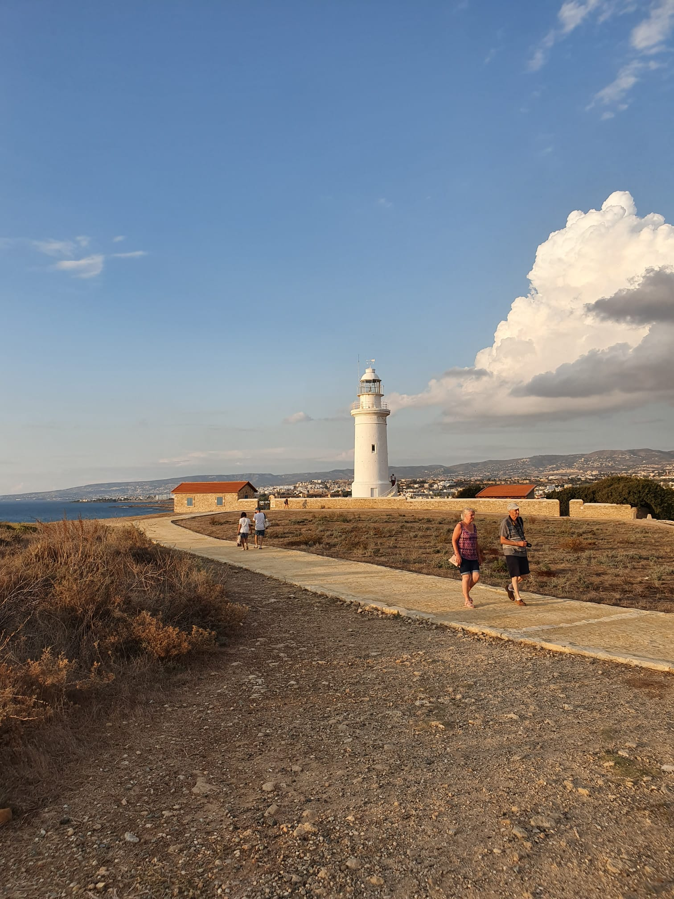
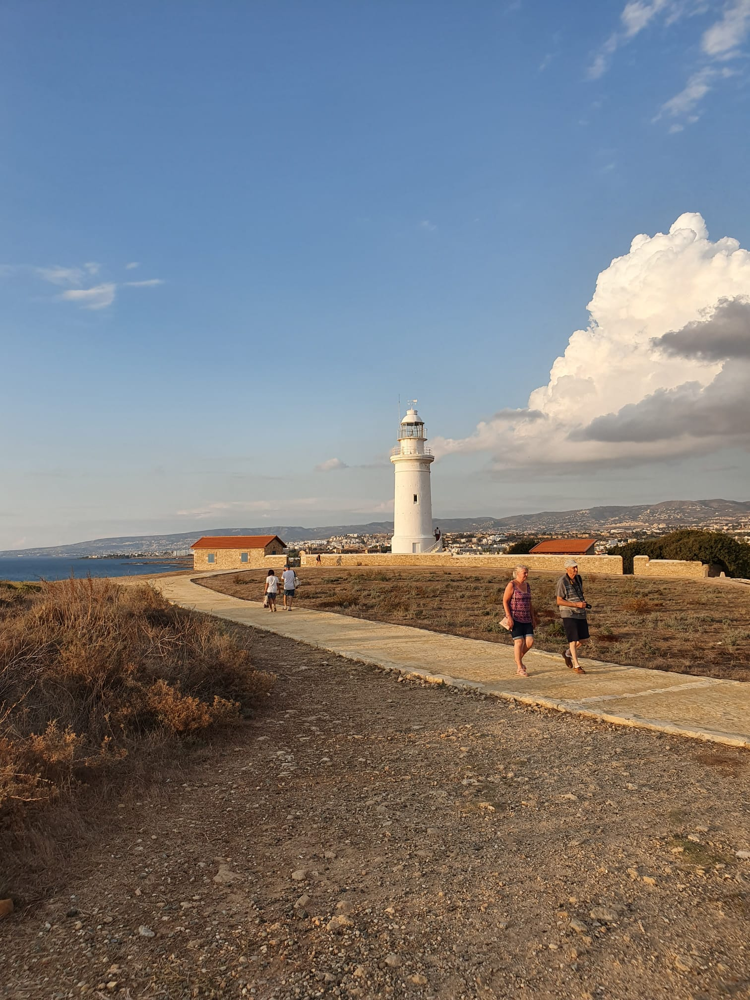

Short presentation of me :
Allow me to introduce myself briefly. My name is Yaacov Mettoudi, and I am currently 28 years old. I reside in Hadera, and I am happily married with two adorable daughters. My eldest is 3 years old, while my youngest is just 7 months. At the age of 18, I had the privilege of serving in the IDF's Golani Brigade, which is part of the Israeli Defense Force.

My hobbies
- I love travelling and discover new cultures all around the world
- Nature is the thing that bring me peace inside of me
- Cooking is one of my favourite activities and its far better when i do it with my wife!
- Playing music is a kind of therapy for me (even if i m not a professionnal haha )
- Reading Mangas because i m in love with the japanese culture
- Martial arts (practicing and watching)
Places where i travelled
- France
- Belgium
- Switzerland
- Italy
- Cyprus
- USA
- Uzbekistan
- Thailand
- Israel
 
